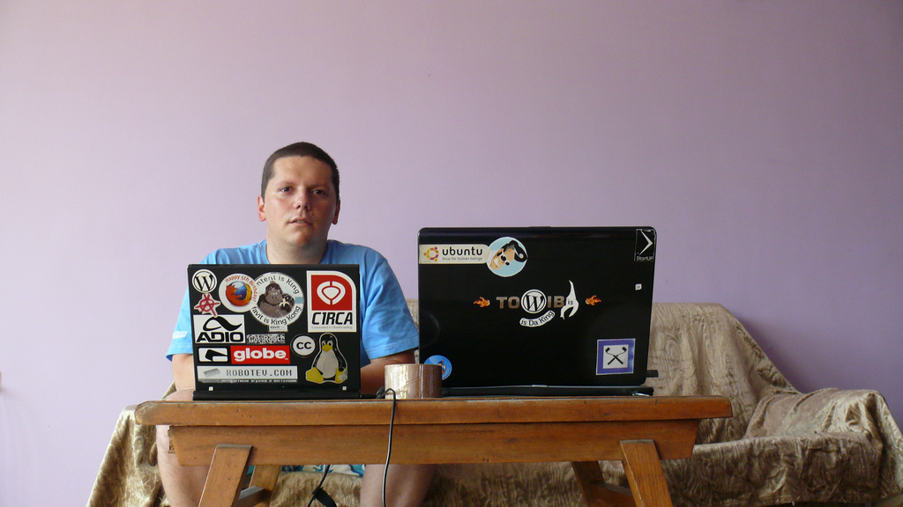

Автоматизация при разработка и поддръжка на WordPress
За Лектора ...
Коко или Мързеливеца
- Ръководител проекти (Project Manager)
- Front End dev, Дизайнер
- В УС на init Lab, Hackerspace в София
Какво правя по цял ден?
Управлявам проекти
Редактирам документация, мъдря задачки за програмистите. Говоря много! (с колегите)
Правя дизайн, пиша код
Защо ви ги казвам тези неща?
- За да обясня че не съм Програмист.
- Контекст
Малко прдупреждение ...
Внимание: Луд Макаджия!
Не се разбирам добре с останалите ОС'и

За Публиката ...
Колко от вас:
-
Управляват WordPress инсталации
-
Разработват теми
-
Ползват Source Control
За Публиката ...
Сега вече трябва много да внимавате!
Започва наистина важната част.
Автоматизация
Автоматизация
Основни проблеми:
- Проблеми със сигурността
- Непредвидими разходи за разработка
- Голяма начална инвестиция
Автоматизация
Основни предимства:
- Увеличена производителност
- Предвидимо ниво на качеството
- Стриктно следване на установените процеси
Автоматизация
Основни предимства:
Най-важните за мен:
-
Мотивация
- Колко умен се чувствам когато завърша нещо такова
- Bragging rights
- Приличаш на "НИНДЖА"
-
Научаване на нови неща.
- Излизането от зоната на комфорта.
- Комуникация с Програмисти
Автоматизация
Няма безплатен обяд!
Сега да не вземете да се юрнете да автоматизирате всичко!
Разработка на теми
Разработка на теми
Създаване на нов сайт
- Създаване на папка в правилното място
- Конфигуриране на VHost
- Добавяне на новият сайт в hosts
- Рестартиране на Уеб сървъра (Apache)
- Създаване на База Данни и потребител с права
- Сваляне на WordPress
- Конфигуриране на WordPress
- Инсталиране WordPress
- Копиране, конфигурация и активиране на нова тема
- Отваряне на файловете от темата в текстов редактор
- Други ... (Sass & Compass)
Вече мога да започна работа.
Разработка на теми
Създаване на нов сайт
- Къде?
- Как?
- С какви инструменти?
Разработка на теми
Създаване на нов сайт
Къде?
- Terminal (bash)
- Browser (download WP)
- Finder / Windows Explorer / File manager
Разработка на теми
Създаване на нов сайт
Как?
- Terminal (bash)
- Browser
Разработка на теми
Създаване на нов сайт
С какви инструменти?
- Terminal (bash)
- Sequel Pro (MySQL client)
-
 MacVim (Text editor)
MacVim (Text editor)
Разработка на теми
Създаване на нов сайт
Забелязахте ли общите неща?
Всяка стъпка от процеса може да бъде направена в:
- Terminal (bash)
Мързеливеца представяlazywp-install
Разработка на теми » Създаване на нов сайт
lazywp-install
$ lazywp-install portfolio
Virtual Host & Server configuration ...
--- hosts file updated.
--- vhost file created.
--- Apache restarted.
Virtual Host & Server configuration - Finished!
...
Разработка на теми » Създаване на нов сайт
lazywp-install
...
Installing WordPress ...
--- MySQL server check passed: running
--- getting the latest WordPress and extracting files.
--- wp-content folder moved outside WordPress folder.
--- wp-config created.
--- index.php file created.
--- database & user created.
--- WordPress database install & admin user created.
--- default development theme created and activated.
WordPress installation & configuration - Finished!
Разработка на теми » Създаване на нов сайт
lazywp-install
Спазване на добри практики
Пример: Разделяне на нашите файлове и системните файлове на WordPress, които подлежат на промяна
Поддръжка на теми
Поддръжка на теми
Source Control, Git
- Винаги държа кода на темата която разработвам в Git хранилищe
- Версия на хранилището има в GitHub и ползвам техните услуги за да автоматизирам качването на промените.
Поддръжка на теми
Automated deployment
Качване на промени в GitHub
$ git commit -m "[commit message]"
...
$ git push
...
Поддръжка на теми
Automated deployment
Настройки в GitHub
Поддръжка на теми
Automated deployment
deploy.php
<?php
// Are we getting the 'payload' json data via POST request?
// If not it will terminate the script.
try
{
$payload = json_decode($_POST['payload']);
}
catch(Exception $e)
{
if($debug) { echo 'No payload data'; }
exit(0);
}
...
Поддръжка на теми
Automated deployment
deploy.php
...
// Save the current directory state
// change to the needed folder
$dir = getcwd();
chdir('[folder needed]');
// Check if there were any commits in the master branch
if ($payload->ref == 'refs/heads/master'){
exec('./deploy.sh 2>&1', $output);
}
// Get back to the original dir
chdir($dir);
?>
Поддръжка на теми
Automated deployment
deploy.sh
# go to the Git repository root
cd [some-folder]
# Get the latest changes from GitHub
git pull
# Remove compiled CSS files
rm css/*.css
# Recompile CSS from Sass files
compass compile --output-style compressed --force
# Any other build operations you might need
Поддръжка на теми
Automated deployment
Готово!
В момента в който push'нете промени в master branch'а сайта ще се обнови автоматично.
Поддръжка на теми
Easy project switching
Consular & Bash aliases
edit portfolio- Open Terminal tab with the project directory and run
git status - Open another Terminal tab and initialize
compass watch - Open the main Sass file in text editor of choice.(MacVim)
- Open the project in all modern browsers. (Safari, Chrome, Firefox)
Демонстрация
Демонстрация
Ресурси
- Bash scripts
- http://github.com/kdankov/bash-scripts
- wp-cli
- http://wp-cli.org/
- Alfred 2
- http://www.alfredapp.com/
- Vim Configadvanced
- http://github.com/kdankov/vim
Демонстрация
Инструменти
- Terminal (bash)
- Sequel Pro (MySQL client)
-
MacVim (Text editor)
- Alfred 2 (App Launcher)
- Safari (Browser)
- Soulver (The Calculator)
Благодаря за вниманието!
Въпроси?
Контакти
- Визитка
- http://dankov.name
- Блог на Български
- http://thelazyperson.org
- Twitter на Български
- @thelazyperson
- Блог на Английски
- http://tanstaafl.dankov.name
- Twitter на Английски
- @kdankov
- init Lab
- http://initlab.org